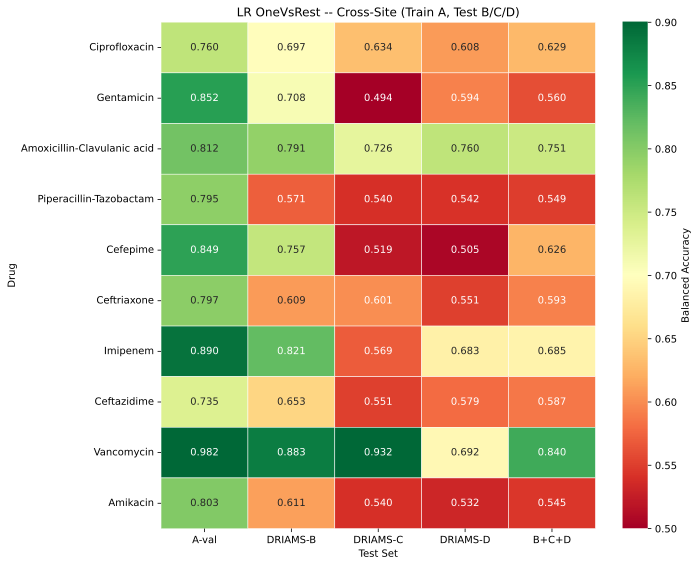
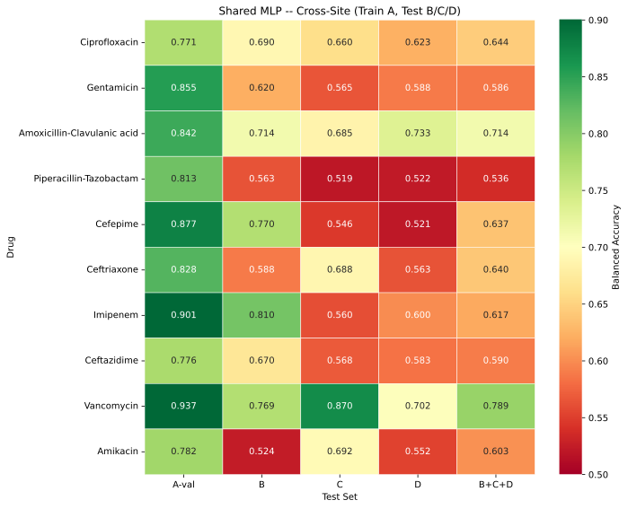
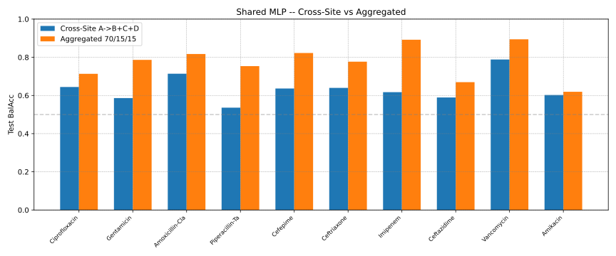

Multi-Label Results
Results are reported per drug as thresholded Balanced Accuracy and threshold-independent AUC-ROC. Two settings are compared: cross-site (train on A only, test on B/C/D) and aggregated (pool A+B+C+D, 70/15/15). 04-00 contributes both settings with the shared MLP; 04-01 contributes the shared CNN on the aggregated split. The OneVsRest LR baseline is run in both notebooks, and 04-00b provides the corrected aggregated LR baseline with validation-tuned thresholds.
Model Configurations
Winning configuration of the 6×6 grid search (per-drug thresholded macro Balanced Accuracy on the external validation split) and the retrained final model:
Experiment |
Setting |
lr |
Dropout |
Grid macro BalAcc |
Retrained (best epoch / epochs) |
|---|---|---|---|---|---|
04-00 MLP |
Cross-site (A → B/C/D) |
1e-4 |
0.36 (0.18) |
0.836 |
14 / 29 |
04-00 MLP |
Aggregated 70/15/15 |
1.8e-4 |
0.44 (0.22) |
0.781 |
10 / 25 |
04-01 CNN |
Aggregated 70/15/15 |
1e-5 |
0.2 |
0.768 |
35 / 50 |
Dropout is shown as high (low = high/2); for the CNN a single value is used.
The cross-site MLP (lr = 1e-4) and the CNN (lr = 1e-5) sit at the low edge of
their lr grids; the aggregated MLP picks 1.8e-4, the second grid point.
Logistic-regression C is searched over 15 values (5e-5–1e-3) by 3-fold
GridSearchCV on the training split.
Files
04-00.../01-results_multilabel/multilabel_results.csv— per-drug BalAcc and AUC for all four model × setting combinations.../aggregated_lr_val_tuned.csv— corrected aggregated LR baseline: bestC, validation-tuned threshold and Balanced Accuracy / AUC for the validation and test splits.../multilabel_results_testtuned_backup.csv— pre-correction export with test-tuned aggregated LR thresholds, kept for provenance.../Final-Comparison-Bal-Acc.txt,.../best_params_04.json.../multilabel_grid_cs.csv/multilabel_grid_agg.csv— full 6×6 grids.../history_crosssite.csv/history_aggregated.csv— per-epoch histories (see Loss-Curve Diagnostics (04))04-01.../results_multilabel_cnn/cnn_results.csv,cnn_grid.csv,best_params_cnn.json,history_cnn.csv
Cross-Site: Trained on A, Tested on B/C/D (04-00)


OneVsRest LR Balanced Accuracy per drug (rows) and target (columns): A-val, B, C, D and the pooled union B+C+D.


Shared MLP Balanced Accuracy per drug and target. The columns are A-val, B, C, D and B+C+D; both models use the same A split and the same per-drug thresholds (tuned on A-val).
Drug |
LR BalAcc |
MLP BalAcc |
LR AUC |
MLP AUC |
|---|---|---|---|---|
Ciprofloxacin |
0.629 |
0.644 |
0.708 |
0.708 |
Gentamicin |
0.560 |
0.586 |
0.606 |
0.692 |
Amoxicillin-Clavulanic acid |
0.751 |
0.714 |
0.824 |
0.798 |
Piperacillin-Tazobactam |
0.549 |
0.536 |
0.630 |
0.575 |
Cefepime |
0.626 |
0.637 |
0.727 |
0.716 |
Ceftriaxone |
0.593 |
0.640 |
0.721 |
0.685 |
Imipenem |
0.685 |
0.617 |
0.885 |
0.756 |
Ceftazidime |
0.587 |
0.590 |
0.671 |
0.627 |
Vancomycin |
0.840 |
0.789 |
0.889 |
0.872 |
Amikacin |
0.545 |
0.603 |
0.612 |
0.651 |
Macro mean |
0.636 |
0.635 |
0.727 |
0.708 |
The two models are level on thresholded accuracy (0.636 vs 0.635) but the LR retains a higher ranking quality (AUC 0.727 vs 0.708). Per-drug, the shared MLP wins on 6 of 10 drugs — largest gains Ceftriaxone (+0.047), Amikacin (+0.058), Gentamicin (+0.026) — and loses on 4 — Imipenem (−0.068), Vancomycin (−0.051), Amoxicillin-Clavulanic acid (−0.037), Piperacillin-Tazobactam (−0.013).
Site difficulty reproduces the 03 ordering. LR site means are B 0.710 > C 0.611 > D 0.605; MLP site means B 0.672 > C 0.635 > D 0.599. B is the smallest site and the easiest target, D the hardest — difficulty tracks Domain shift, not sample size. The heatmaps also show the collapse of individual drugs on single sites (Gentamicin 0.494 on C for LR, Imipenem 0.560 on C for MLP, Cefepime below 0.55 on C/D for both models).
Validation does not predict transfer: the mean A-val Balanced Accuracy is 0.828 (LR) and 0.838 (MLP), roughly 0.20 above the B+C+D test means. As in 03, the model that looks best on A is not the one that transfers best.
Aggregated: Trained on A+B+C+D (04-00)


Shared MLP test Balanced Accuracy per drug for cross-site (A → B+C+D) and aggregated (70/15/15) training.
Drug |
LR BalAcc |
LR AUC |
MLP BalAcc |
MLP AUC |
|---|---|---|---|---|
Ciprofloxacin |
0.712 |
0.784 |
0.713 |
0.789 |
Gentamicin |
0.790 |
0.867 |
0.786 |
0.853 |
Amoxicillin-Clavulanic acid |
0.818 |
0.886 |
0.817 |
0.894 |
Piperacillin-Tazobactam |
0.735 |
0.816 |
0.754 |
0.827 |
Cefepime |
0.822 |
0.896 |
0.822 |
0.891 |
Ceftriaxone |
0.766 |
0.842 |
0.777 |
0.856 |
Imipenem |
0.896 |
0.960 |
0.892 |
0.954 |
Ceftazidime |
0.652 |
0.728 |
0.670 |
0.748 |
Vancomycin |
0.932 |
0.935 |
0.894 |
0.920 |
Amikacin |
0.691 |
0.799 |
0.619 |
0.766 |
Macro mean |
0.781 |
0.851 |
0.775 |
0.850 |
The LR columns come from the corrected validation-tuned export
(aggregated_lr_val_tuned.csv, now also merged into
multilabel_results.csv and Final-Comparison-Bal-Acc.txt).
Pooling the four sites lifts the shared MLP from 0.635 to 0.775 macro Balanced Accuracy (+0.139), the same gap measured for the per-drug models in 03 (+0.15 to +0.19). Under the same validation-tuned protocol the LR reaches 0.781 / 0.851, ahead of the MLP by +0.007 Balanced Accuracy and level on AUC (+0.001). Per drug, the gain is largest where cross-site transfer was worst: Imipenem +0.275, Piperacillin-Tazobactam +0.217, Gentamicin +0.201; smallest for Amikacin (+0.017), Ciprofloxacin (+0.070) and Ceftazidime (+0.080). The ranking quality follows: MLP AUC rises from 0.708 to 0.850.

Interpretation
Model family: LogisticRegression ≥ shared MLP ≈ CNN. The multi-label models do not beat the linear baseline on either setting; the best aggregated model is the validation-tuned LR (0.781), ahead of the MLP (0.775) and the CNN (0.762).
Multi-label vs per-drug binary: the ~6× label signal does not improve accuracy. On cross-site, the multi-label MLP (0.635) is exactly level with the per-drug LR (0.636, and 03 reports 0.634 for the per-drug MLP); on aggregated data it is level with the pooled LR. Inter-drug transfer does not compensate for the loss of per-drug specialisation.
Domain shift dominates: pooling four sites adds ~+0.14 Balanced Accuracy to the same model, far more than any architecture change tested here.
Vancomycin and Amikacin are the least stable drugs: Vancomycin has LR A-val 0.982 but drops to 0.692 on D, while Amikacin is at or near chance on several targets and is the one drug where the CNN beats LR.
Caveats
Results come from a single seed (42); no confidence intervals are available and per-drug differences below ~0.02–0.03 should not be over-interpreted.
The aggregated LR baseline of the original 04-00 run tuned its thresholds directly on the test set (the only such case in 01–04), making its macro mean 0.792 optimistically biased (up to +0.053 on Amikacin). This was corrected on 2026-10-09: the 04-00 notebook now tunes aggregated LR thresholds on the validation split,
multilabel_results.csvandFinal-Comparison-Bal-Acc.txtcarry the corrected values (macro mean 0.781), and the standalone re-run isaggregated_lr_val_tuned.csv. The pre-correction export is preserved asmultilabel_results_testtuned_backup.csv.Reported test metrics use the best-validation-loss checkpoint, not the epoch with the highest validation Balanced Accuracy; for the cross-site MLP the curve maximum (0.776) occurs at the final epoch while the checkpoint (epoch 14) has 0.742. See Loss-Curve Diagnostics (04).
The cross-site MLP (lr = 1e-4) and the CNN (lr = 1e-5) sit at the lower edge of their lr grids; stronger regularisation/learning-rate settings were not explored.
Per-site values exist only in the heatmap figures; the exported CSVs contain the pooled B+C+D result. B+C+D is dominated by the larger sites (C, D), not a macro-average across sites.
B/C/D test sets are used as-is and may contain species never seen in A; this is a hard generalisation test but also a confounder, as in 03.
Low-prevalence drugs (Vancomycin, Amikacin) rest on few resistant isolates, so their metrics carry the largest uncertainty.
Only the current exports are used here: the older June/July files in the 04-00 top-level directory (e.g.
final_analysis_report.md,multilabel_final_comparison.pdf) are from superseded runs and disagree with the October exports in01-results_multilabel/.